A Lycian Fire
July 2026
For now we see through a glass, darkly; but then face to face.
— 1 Corinthians 13:12
Chapter 1: The Eternal Fire
I saw a flame on a Lycian slope.
It rose directly out of the stone, sustained by no hearth, no wood, no visible fuel, clinging to the grey-white rock where it burned with a slight, trembling agitation in the wind, emitting a low, puffing sound as though some buried language were leaking from the earth’s interior. We are accustomed, of course, to fire at night, for the dark restores to it a center, a theatricality, its ancient dual force of illumination and terror. But here, at noon, under the flat violence of the sun, the fire was deprived of its dignity as a source of light; it became pale, almost weightless, resembling nothing so much as a small, unhealed wound upon the surface of the mountain.
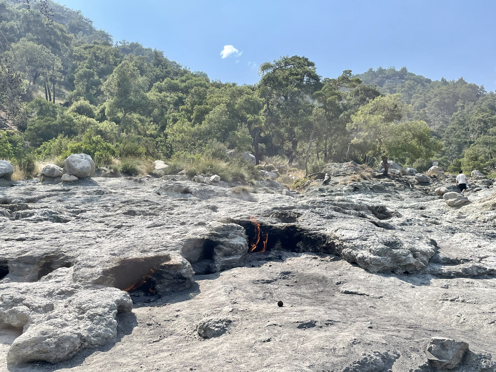
This was Mount Chimaera, known in Turkish as Yanartaş: the burning stone.
By the time we reached the terrace, we had already been walking for hours along a path that was not a scenic staircase in any modern sense, but a rough assemblage of uncut stone, weathered red earth, pine needles, and exposed roots. Along the incline, people had built, or perhaps merely allowed to emerge, a series of uneven stone steps. Rain, fallen leaves, and the friction of countless feet had worn them smooth. On both sides of the stone stairway stood Mediterranean pines. The wind passed through their needles with a dry, granular sound, like waves one could not see. The sun fell through the branches. Sweat soaked through my clothes. Sticky sweat.
Sweat.
On our way up, two Turkish men coming down the mountain stopped to shake our hands. One of them asked if we were Japanese, and when he learned we were Chinese, he suddenly pressed his palms together and bowed. Neither of us knew how to respond to that gesture. We merely smiled back, a hollow substitution, leaving the gesture to hang between us, brief and unmoored, before they turned and vanished into the pines.
Suddenly, the shade opened all at once, and upon a relatively flat shelf of the slope, the ruins of a Byzantine church appeared.
It was a mere remnant now—broken walls, collapsed arches, a semicircular apse here and there—just enough remained for the building’s original purpose to be felt. The stones were a mixture of reddish brown and grayish white, irregular in size and bound together by thick, dry mortar. The dome had long collapsed, leaving only the damaged curve of the apse open toward the sky. Through the empty rectangles of the windows the midday light passed through unimpeded, falling uselessly upon the rubble and the dry grass below.
The curved wall of the apse was so low that I had to crouch and crawl to wedge my body into the small patch of shadow it cast. Inside, the frescoes had nearly vanished into the plaster; one could make out only the vague, ghostly perimeter of a red disk, and a few darkened traces of green and yellow patterning. The image was too broken to be recognized, but perhaps this was a mercy. A complete image possesses a tyrannical narrative, but a broken color no longer commands you how to think; it simply exists.
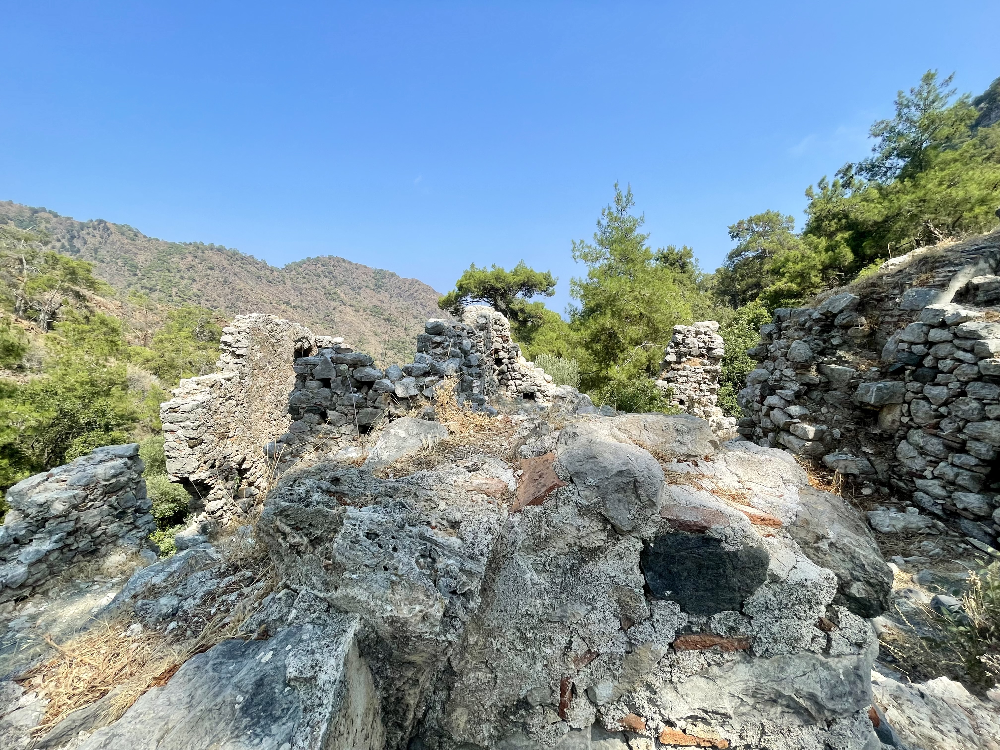
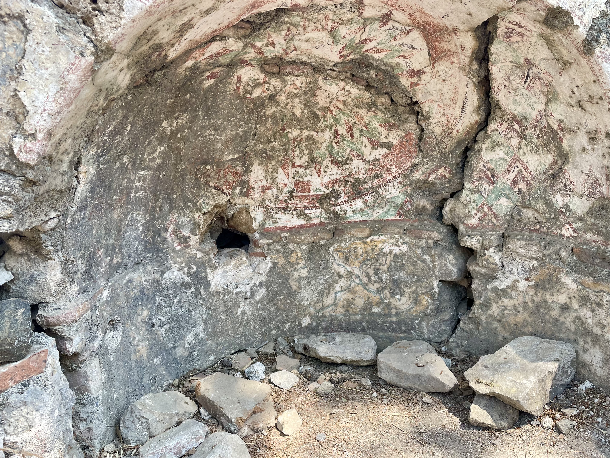
Sitting there, I was reminded of the damaged frescoes I had seen a year ago in the church of San Pietro in Tuscania, Italy, where the faces of saints, their halos, and the heavy folds of their robes had long ceased to be legible, leaving nothing but patches of blue and ochre paints clinging desperately to the walls.
It was said that this church was built over an older sanctuary of fire. If this is true, then on the same slope an old god and a new god once occupied the very same flame.
The Greeks gave this place to Hephaestus, god of fire and forge; later, around the sixth century, Christians built their sanctuary here, repossessing this burning ground in the name of the Cross. Yet the stones remained more or less the same. The fire still rose from below. What changed was the language constructed around the fire.
In Greek myth, Chimaera was a nightmare composed of different animals, the offspring of Typhon and Echidna, who gave birth to many other monsters. It had the head of a lion, a goat’s head rising grotesquely from its back and breathing fire, and a serpent for a tail. For this reason the word chimaera has come to denote any impossible assembly of drastically different parts, or an illusion of the mind.
Chimaera once inhabited the Lycian wilderness, that is, this very land before us. From the mouth of the goat’s head it breathed an inextinguishable fire, burning villages and forests to ash. At last the hero Bellerophon descended from the sky on Pegasus, the winged horse. To destroy the monster, he fixed a block of lead to the end of his spear and, as he plunged downward, thrust it into the fire-breathing throat of Chimaera. The monster’s own flames melted the lead, and the molten metal flowed into its entrails, burning it from within.
But now we know that the fire comes from natural gas escaping through underground fissures.
And so the breath of the monster, the sanctuary of the fire god, the miracles of saints, have all been brought into the order of modern knowledge and made explainable.
But to become explainable is not the same as to be exhausted.
Nietzsche writes in On Truth and Lies in a Nonmoral Sense that when we speak of trees, colors, snow, and flowers, we believe we know something of things themselves, while what we possess are only metaphors of things, metaphors that in no way correspond to their original essences:
Wir glauben etwas von den Dingen selbst zu wissen, wenn wir von Bäumen, Farben, Schnee und Blumen reden und besitzen doch nichts als Metaphern der Dinge, die den ursprünglichen Wesenheiten ganz und gar nicht entsprechen.
And in the end, we forget that these concepts were once metaphors of our own making, and take them instead for objective, sacred, inviolable truths:
… die Wahrheiten sind Illusionen, von denen man vergessen hat, dass sie welche sind, Metaphern, die abgenutzt und sinnlich kraftlos geworden sind.
Chimaera the monster. Hephaestus. The Virgin and the Son. Methane, CH4.
Each name must once have been a raw, incandescent thing, filled with seduction and terror, with the expectation that the unknown world might yield itself to speech. Then, through the slow abrasion of repetition, explanation, and interpretation, each name has lost the sharpness it once had at birth.
Yet the fire was indifferent to these attempts of interpretation.
Man is not the master of explanation. On the contrary, explanation itself is a daemon with self-consciousness, ceaselessly attempting to explain itself and its surroundings—whether the self and the surroundings exist at the same time, whether one is merely the projection of the other, is not the question here—and man is only the temporary vessel of that consciousness. Standing before the flame, I felt a slight unfreedom. It was not that I wanted to explain the fire. Something more primordial than I was claiming me in its search for a house—language—in which it might dwell. A sudden Überfallen, as Heidegger might call the experience. As he pointed out in On the Way to Language:
Wir sprechen nicht nur die Sprache, wir sprechen aus ihr. Dies vermögen wir einzig dadurch, daß wir je schon auf die Sprache gehört haben. Was hören wir da? Wir hören das Sprechen der Sprache.
We do not merely speak the language—we speak by way of it. We can do so solely because we always have already listened to the language. What do we hear there? We hear language speaking.1
Perhaps only such moments come close to the thing-in-itself: moments that try to circumvent the bondage of language and explanation. Such moments must be speechless, as Lu Xun wrote of the old woman in The Trembling of a Decadent Line:
她于是举两手尽向天，口唇间漏出人与兽的，非人间所有，所以无词的言语。当她说出无词的言语时，她那伟大如石像，然而已经荒废的，颓败的身躯的全面都颤动了。
She flings both hands toward the heavens, and from between her lips escapes an utterance both human and bestial, belonging to no human tongue—a wordless speech. And as she gives voice to this wordless cry, the whole of her body, monumental as a stone effigy yet utterly derelict, shudders through and through.2
The fire continued to move.
It is the nature of the fire that every instant was different. As such, it could not be photographed completely nor preserved in word—one fixes only one second of its form, while the other can only draw unstable borders around it in a circuitous way. The instant the attempt of fixation strikes, it is no longer the same flame. It mimics time itself, achieving its true existence only through its own vanishing.
The fire remains close to the ground, quiet, stubborn, and humble. A great fire easily becomes a spectacle. The low, persisting fire in front of us belongs to the order of myth.
Around the church ruins, collapsed side walls and secondary rooms lay scattered among dry grass and gravel. Many walls had been reduced to their foundations. Stone beams lay on the ground. Broken columns had weathered into smaller stones. Those who had prayed here, chanted and lit lamps here, gone; Hephaestus, gone; Chimaera the monster, gone. The architectural order of Christianity had fallen apart. Modern tourists come and go. As all of those were happening, the fire was still burning in the cracks of the rocks, defying interpretations.
As I continued to climb upwards, the slope gradually stripped itself of vegetation and revealed a harder texture. Grey-white limestone covered the ground. I continued alone as W stayed at the church ruins. The incline grew steeper, almost impossible to climb directly, so I moved diagonally, ascending slowly in a zigzag line, as one cuts across snow on skis to reduce the slope. But there was no snow here, only hot stone and dry wind.
Climbing rendered my thoughts discontinuous.
Breath. Gravel slipping. Pine needles. The sound of cicadas. Sweat.
The fire below. The sea somewhere unseen.
The sea.
When I finally reached the summit, the field of vision opened narrowly. Beyond the dry branches and stones, mountains unfolded in layers, and the Mediterranean Sea lay at their end. Because the mountains blocked it, the sea did not appear vast. What shook me was the nearly indivisible line between sky and water, and the fragile, milky blue that seemed ready to evaporate at any moment. The sea did not glitter even a bit. It remained there at a distance, a vast, inert presence, like an answer that no longer wishes to speak.
Chapter 2: Blue
Before seeing Antalya, I saw Anatolia from the air.
The first thing that appeared outside the airplane window was not the city or the sea, but the enormous taupe body of the land itself—folded mountains, dry ridges, gorges cut into the earth like the deep lines on the palm of an ancient hand. The land seemed withdrawn into itself, almost hostile in its refusal of softness, and yet, because I was seeing it from above, suspended in the artificial stillness of the cabin, it also had the terrible calm of something that had long ago ceased to respond to any contact from without.
The mountains spread. Their power came not from height but from extension, from the feeling that one fold would lead to another, then another, until all the visible earth had become a system of resistance. Farther away, darker ridges gathered at the horizon, their upper edges still marked by small patches of snow.
And the sea appeared.
Not gradually. It came as a sudden opening at the far edge of the land, a blue fissure, a flat impossibility. Sky and water touched each other so calmly that the boundary between them almost failed to separate. Beneath the aircraft, between mountains and the sea, lay a narrow plain crowded with roads and the shining white roofs of houses. From that height, they looked like scattered fragments of some mineral substance thrown across the strip of cultivable land.
As the descent continued, the coastline sharpened. White modern buildings appeared along cliffs and bays, not as a skyline, but as clusters, low and staggered, deposited irregularly along the rock. Beneath them the water was too blue, too calm, too lucid, and for that reason not entirely believable. Parks, roads, hotels, trees, and white terraces clung to the cliff edge, and it was at this moment that I first understood Antalya not as a seaside city, but as a city pressed toward the sea by mountains.
At the airport, Antalya immediately lost some of the mysteriousness it had gained from the air. Compared with Istanbul or Doha, the terminal was small, almost casual. The officer stamped my passport with an indifference. Outside, the sun struck the pavement, the glass doors, and the parked cars.
I chose the bus instead of a taxi because a taxi would have dropped me too efficiently into the image I was supposed to relish.
The bus moved first through inland Antalya. There the city was not white, not blue, not Mediterranean in the clean way the word is used in advertisements. It was dusty and half-demolished. Old buildings stood empty with damaged windows; heaps of brick, concrete, twisted metal, and construction waste lay exposed under the sun. Between storefronts appeared small vacant lots where yellow grass had grown high and dry.
Few people walked. Perhaps it was because of the noon heat. Cars, however, moved quickly, almost violently, with the typical impatience of drivers of small cities. I thought of towns in Xinjiang, where my mother grew up. The same dusty color, the same sun-bleached facades, the same strange combination of heat, emptiness, and signs promising a life more active than the street itself.
When the bus came closer to the coast, the buildings became whiter. Seven- or eight-story apartment blocks appeared, standing apart from one another in the sun. They did not quite form a neighborhood, standing isolated from one another as separate white objects.
When I stepped off the bus, a large flying insect passed abruptly in front of me with a short, harsh buzz.
That sound stayed with me. A small violence.
The hotel was by the sea. In the room, I drew back the curtain, and the sea entered all at once. Below the window lay the pool, the deck, the umbrellas, the large trees, the white surfaces, and an artificial calmness. Beyond them the real sea continued outward, passing through gradations of blue until it met the mountains in a pale distance. The weeds, yellow walls, and empty storefronts from the bus ride were pushed behind the brightness.
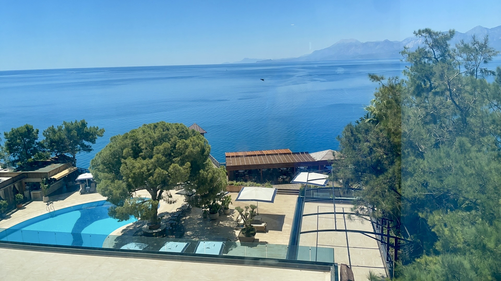
Later I went down to the sea.
The hotel did not descend gently toward the water. It stood on a high black cliff. To reach the lower terrace, one had to take an outdoor elevator from the upper level. The elevator moved slowly, suspended against the cliff as it descended.
Without the cliff, the sea might have dissolved into leisure; with the cliff, it acquired a hard border. The pool, the white towels, the deck chairs, women in swimsuits, men carrying drinks, the loose and annoying hotel music—why can’t they play something nice, like Schubert, or perhaps Britten—the slow turning of pages beneath umbrellas. The Mediterranean was not merely blue and white. It was also black too. Hot black rock. Rock that had refused to become sand.
On the terrace, I lay under a wave-shaped awning that filtered the sun into broken patches of light. The awning moved slightly in the wind, and the shadows moved along with it. In front of me several white umbrellas stood open; beneath them hung bathing suits, towels, and pieces of light summer clothing, all swaying faintly in the wind.
Farther beyond was the sea, a blue offensively pure, an impossible surface under a cloudless sky.
There are blues that console. But this was not one of them.
This blue exhausted the eye. It was too complete, too available, too indifferent to the person who looked at it. Perhaps this is why, after some time, the beautiful view began to empty itself with the exact same intensity with which it offered itself to sight.
The body grew heavy in the sun. Thought slowed. Then thought became suspicious of its own slowness.
Light. Salt. A page turning. Someone moving a chair.
Before arriving, I had hoped that the Mediterranean would bring me solace. Yet—
The blue of the day was like an overexposed photograph, too bright, too clean, offering no shadow or dark recess where the eye might pause. It took away my privilege to be concealed—one could not hide behind a glare so total.
It was the same pure blue sky that I had known during my breakdown in Chicago. There, whenever I look up into a cloudless noon, a violent sense of unreality would strike me like a physical blow. Why does the purity of a thing contain such unquestionable violence? Why does it cut so deeply?
It was a blue to the point of distortion, a sky that announced the universe was proceeding in its cold, perfect order, in which my pain had no place. Life passed over my body with the irresistible, crushing weight of an iron wheel, and I could not even make a sound.
The blue kept unfolding outward. Cruel, cruel blue.
That day we took a boat out from the port of Marina. As we cleared the harbor, the shore slowly receded: white houses, palms, yachts, restaurant signs, and buildings along the cliffs were pushed back into distance.
Beneath us, the surface of the sea took on a heavy, silken texture, losing all its casual transparency under the sun. It became étale—a vast, suspended sheet of molten blue. The wind did not blow so much as scrape this surface, carving it into fine, diamond-shaped folds that turned over one another like fish scales, striking out a cold glitter against the deep blue ground.
Far out, the sea kept its ink-like darkness, but on each crest bitten by the sun, the color was forcibly bleached into a pale, fluorescent teal. There was no gentle transition in between; the boundary between brightness and darkness was drawn as thin as a razor's edge. When the side of the boat cut through the water, a sudden frenzy of white foam surged up—the only fracture in that perfect blue—boiling into a thousand ragged bubbles that sparkled, dissolved, and were instantly reabsorbed into the dominant, unblinking rhythm of the tide.
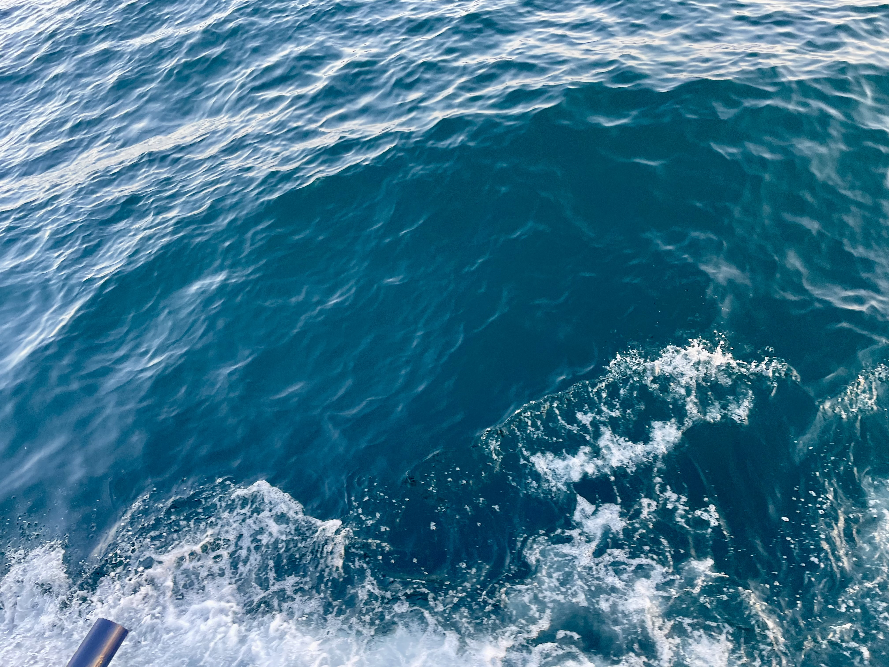
The sea reminded me of the Appalachian trails I had once walked; they both possess the terrifying infinity that refuses human interference. It spread in every direction, without center or intent. It was simply there, bearing the glare, the wind, and the passage of boats. It has witnessed the rise and ruin of ancient cities along the coasts, as well as generation after generation of people as they projected their fear and hope upon it. It had seen Lycian wooden boats; it now saw the cameras of modern tourists. Yet it held no conscious memory–it was merely a cold witness, utterly devoid of narrative desire.
For we do not truly want infinity; we only enjoy elegizing it from a safe distance. When it actually confronts us, it brings not liberation, but a sickening vertigo. Where every direction is possible, every destination becomes equally false.
I looked down into the water and felt a static, calm terror. It was not the fear of a catastrophe that was about to happen, but the far worse horror of realizing that nothing would happen at all.
The sea would remain silent. The harbor would light its lamps. The tourists would continue to take their photos. The boat would return at the scheduled time. My anxiety would not be purified by this encounter with the sublime; instead, confronted by an absolute indifference, it simply lost its voice.
Toward dusk, the boat turned back toward the shore. The overexposed, brutal blue above us began to subside like a fever, giving way to a tired, grizzled twilight. Passengers leaned loosely against the railings. The warm yellow light strips beneath the roof of the cabin had already come on. In the distance, the Beydağları mountains—part of the Taurus range—turned slate in the night. During the day they were often blurred, as if strong light had erased their edges; at night, strangely, they regained their shape.
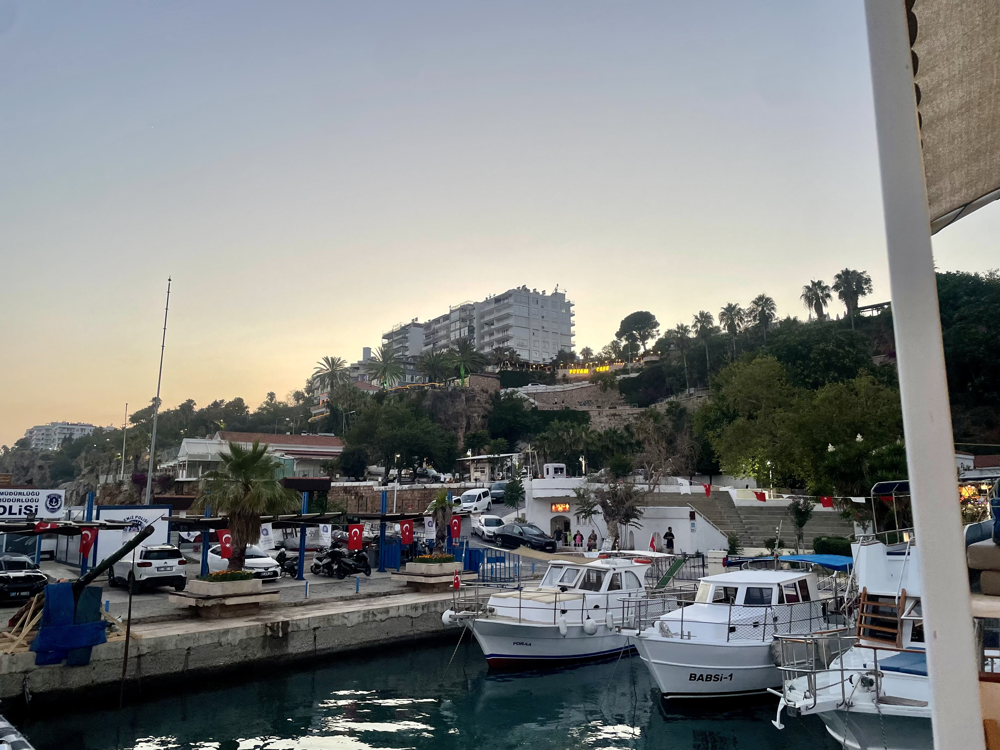
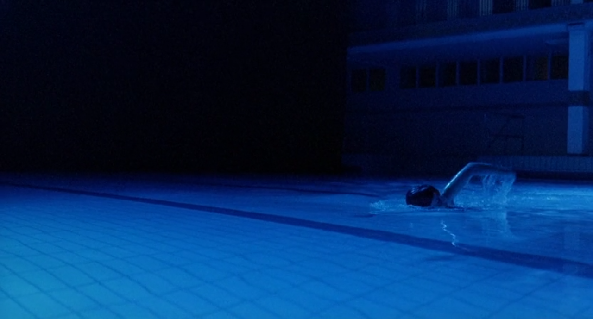
At the hotel, the pool was another blue, and more troubling because it was artificial. In daylight it had the color of polished glass, almost fluorescent near the steps. At night it became deeper, colder, a chemical blue rising from underwater lights. It reminded me of the swimming pool in Kieślowski’s Blue—or perhaps I should say, Bleu, I like the French spelling of the word much more, bleu, it gives the sensation of something unfinished, perhaps it was the vowel, or it might have been my mouth, while blue closes up the mouth too quickly and confidently, which seems too certain and therefore boring. In that film, too, blue is not a color but a condition of mourning, a luminous monstrosity incapable of warmth and consolation.
The blue of the pool belonged to electricity. It glowed from below with an alien persistence, like a giant artificial organ. Freud would have said: Unheimlich. Yet, under its chemical glare, there was a strange asylum—I was finally no longer hunted by the tyrannical purity of the sky.
And silence. An enormous silence. A silence like a wall, swallowing the body in its entirety.
At night, the hotel garden darkened into silhouettes. Large leaves, pine branches, and tangled crowns of trees gathered into black masses against the sky. Warm yellow lanterns hung low among them, producing a golden haze that touched the leaves without softening the air. The air was not cool. It was not hot either. It was viscous. The world seemed not to breathe.
Below the cliff, the sea had become a washed black. The Old City Marina of Antalya flickered in the distance with small lights. Nearer the cliff, waves struck the rock with a continuous sound, neither violent nor gentle.
A cat slipped along the edge of the terrace. As it crossed the blue light, its tail brightened for an instant, then disappeared at once among the tables, chairs, and plants.
Chapter 3: Cats
In Antalya, cats are everywhere.
At first, I noticed them only as one notices a recurring detail—a leitmotif in a foreign city: beside restaurant tables, on stone steps, near the legs of chairs, beneath the shade of trees, at the edge of hotel terraces and the entrances of shops where no one seemed surprised by their presence. They did not behave like strays. Nor did they behave like pets. They had perfected a third condition for which I had no immediate name.
A dog, even a stray dog, always carries with it some dimension of human connection—loyalty, fear, hunger, gratitude, injury, abandonment. But cats did not invite such narratives. They lay in the dust and shade with a sovereignty that made all human relations appear crude, even comic.
A cat passed under our table on the first evening. We had gone to a nearby restaurant after W and I met up at the hotel. The restaurant had a retractable roof, and by the time we sat down it was almost eight o’clock. The sun was setting. The heat of the day, which had earlier seemed absolute, began at last to loosen. The roof had been drawn open, and above us the sky was darkening. Wind entered from above, brushing the glasses, the metal cutlery, the smoke from the grill, and the black hair of the waitress.
Then the lamb tongue arrived. It was sliced into pale pink pieces, almost flesh-colored. It lay quietly on the white plate under olive oil, parsley, and a small scattering of spice.
The thin cat moved between the legs of our chairs quietly, offering no supplication. I felt a sudden, unbearable proximity of all bodies: the cat alive and moving, the lamb tongue soft and silent on the plate, the bearded men cutting meat, the women smoking at the next table. A tongue eaten by a tongue. There is no way to think this without absurdity. There is no way to avoid thinking it.
I remembered Bohumil Hrabal’s All My Cats. Those cats are not ornaments of domestic tenderness; they are not there to soften the world. They stand at the terrible intersection of affection, guilt, cruelty, dependence, and the total impossibility of redemption. Even tenderness can become a form of violence when it touches what it cannot understand.
The Turkish cats were lighter than Hrabal’s cats. They did not live under the tragic pressure of one man’s conscience. Thank God! They were free because no one owned them, but their freedom was also the freedom of exposure to cars, illness, and chance. Perhaps every form of freedom has within it a small brutality, an element of being left to oneself. The cats of Antalya moved through this brutality without commentary.
The next day, or perhaps the day after, I saw another cat sleeping in the Old Town.
It lay on a stone step in full shade, its body pressed against the wall, tail wrapped over one hind leg. Around it the street continued with its ordinary disorder: motorcycles, shop signs, peeling paint, hanging fabrics, a man drinking tea, a woman in black passing quickly under the sun. The cat slept through all of it.
I had begun to feel that the cats were not part of the city’s charm, but part of its metaphysics.
Every city has beings that reveal how it thinks about boundaries. In some cities it is pigeons. In some, rats. In Antalya it was cats. They moved between inside and outside, sacred and commercial, ancient and ordinary, clean and dirty, loved and ignored. A cat could walk through a restaurant, then through the ruins of a Roman wall, then vanish under a car. It crossed all the categories human beings had arranged so carefully and made them look temporary.
Perhaps this is why they seemed older than the city. Not biologically, of course, but as a form, as a manner of being.
Another time, we were sitting near the Hıdırlık Tower, one of the oldest surviving monuments in the city of Antalya, whose lower story was erected at the turn of the second century AD. We were eating grilled fish at a restaurant, the outdoor tables practically clung to the cliff side. Below us lay the Mediterranean, its waves rising and falling against the black rocks with a muffled, continuous breathing. On our table, pan-fried sea bass and deep-fried turbot sat side by side on long white porcelain plates—one tender and clean, retaining the pure light flavor of the sea; the other cut into thick chunks with a golden, crispy crust.
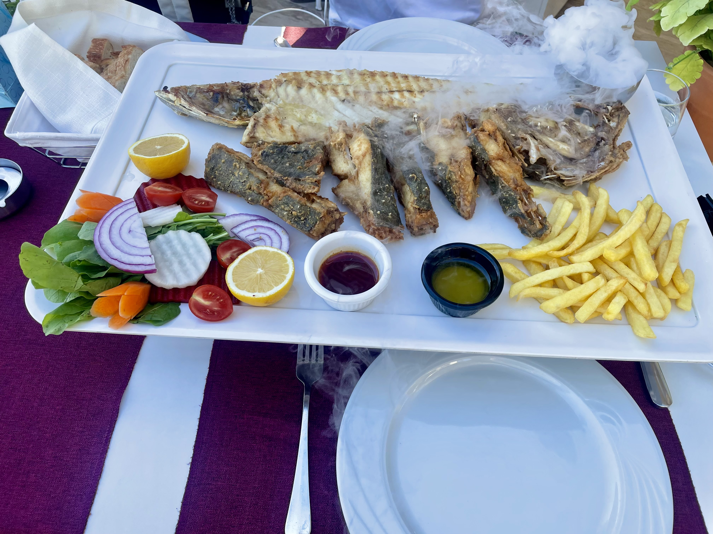
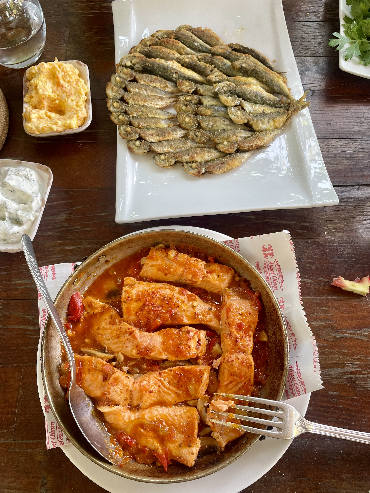
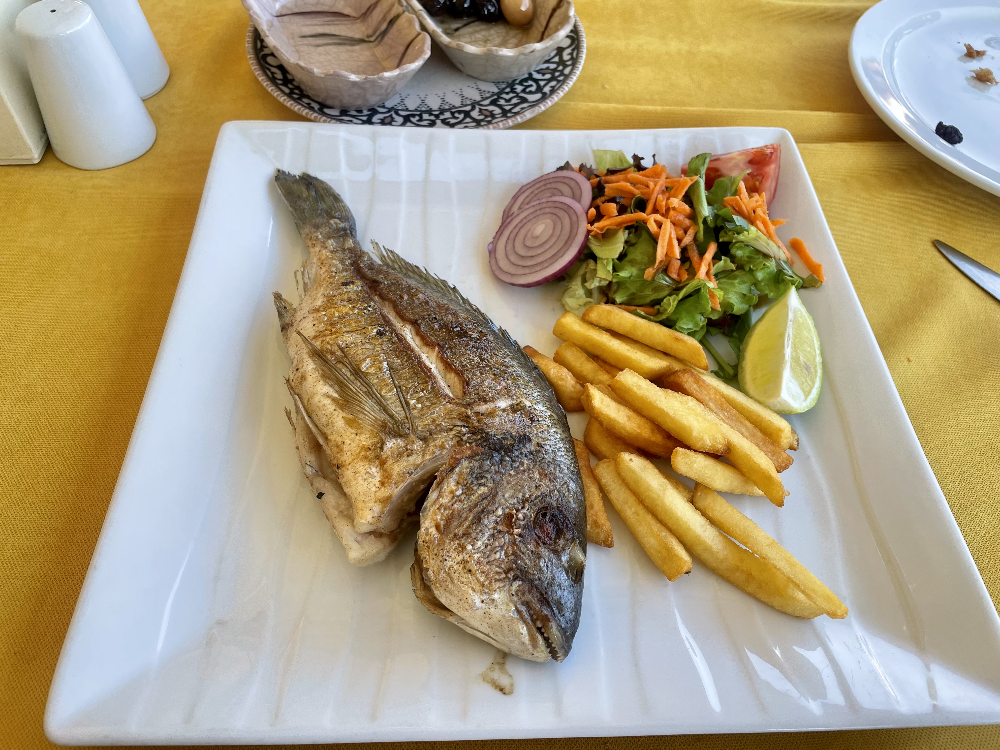
Right beside us stood the ancient tower, its stones darkened, its interior overgrown with weeds. It wasn't grand; it had the dullness of something entirely hollowed out by time—a relic that had stopped explaining itself.
Just then, a kitten emerged from the tower, lightly. It didn’t look at the tower, and it didn’t look at our fish. It walked from the tall grass into the skirting and vanished. In that instant, the fish, the cliff, the tower, and the cat connected into a strange portrait: a dead empire, a plate of still-warm flesh, the deep blue sea underfoot, and a small animal completely free from historical burden. I felt a small stab of envy. We can only visit ruins; cats inhabit them.
Later in Alanya, across from the archeological museum, I sat in a café alone. The Turkish coffee tasted strongly of earth. A little girl sat beside me. She noticed the black bear keychain attached to my backpack and began to play with it. She did not ask for permission. She only looked into my eyes for a brief moment ambiguously—a gaze that held the exact indecipherability of a cat’s glance. She simply reached out, turning the bear around and back again as if inspecting a strange, small animal. Well, then, alright, I thought to myself, this little bear belongs to her, for now.
At that moment, I realized the little girl and the cats belonged to a secret alliance. Neither cared for the adult rules of ownership, boundaries, or politeness. They reach out, they pass through, they stay, they leave. No declarations, no annotations.
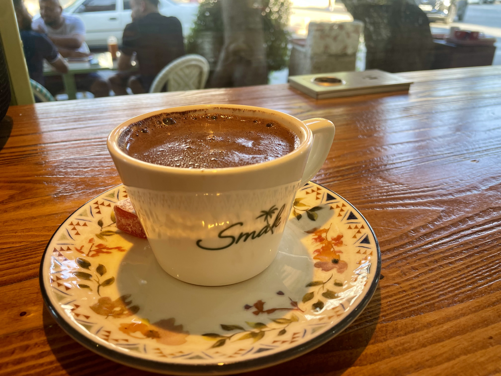
In the evening, the cats were still there. Under the table legs, in the grass of the old tower, near the holes in the seawall. They raised their tails, then lowered them. They walked directly through the middle of our sentences.
Sometimes, I would begin to think of history.
A cat arrives.
I would begin to think of women.
A cat arrives.
I would begin to think of death.
A cat arrives.
It walks onto a sun-bleached stone, stops, and licks its paw.
Chapter 4: Stones
Civilization remains, in the end, in the form of stones.
Temples, laws, languages, empires—those names that once gathered people together, compelled them to obey, trade, pray, and kill one another—can now only be glimpsed in books, on maps, or on a sun-bleached explanatory panel standing beside a gravel path. But when one is actually standing in the middle of an ancient city, what appears first is not these abstract concepts.
It is stone.
Perge was a city emptied out by the sun.
It had once been one of the important cities of Pamphylia, that flat region along the southern coast of Anatolia, facing the Mediterranean, caught between the Greek, Persian, and Roman order. By the Hellenistic period it had already acquired the outline of a city, and under Rome this outline expanded into a clearer public order: streets, gates, baths, and a gymnasium. Apollonius of Perga, who gave his name to conic section, was born here.
When we arrived, the midday sunlight was too strong, it was almost impossible to keep my eyes open. In the distance were mountains, silent at the end of the field of vision. The main street was still broad. One could imagine traffic there, crowds, voices, horses, and wheels beneath the colonnades. In the middle of the street there remained the trace of a water channel. On both sides stood column bases and broken shafts. Some columns were still upright; others had been reduced to stumps.
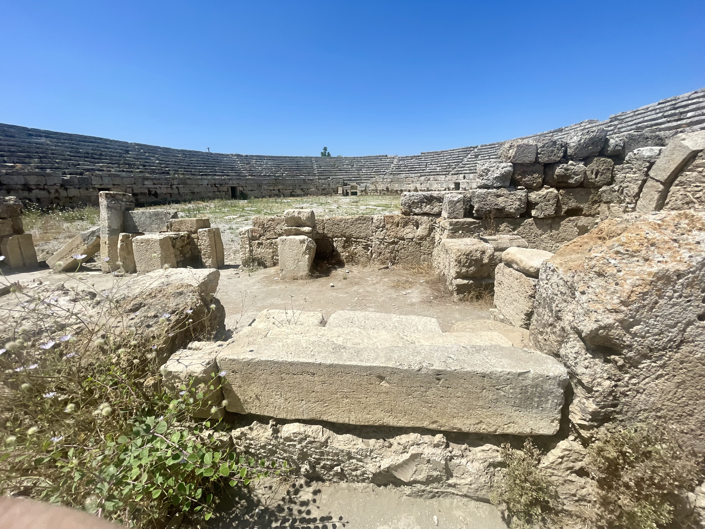
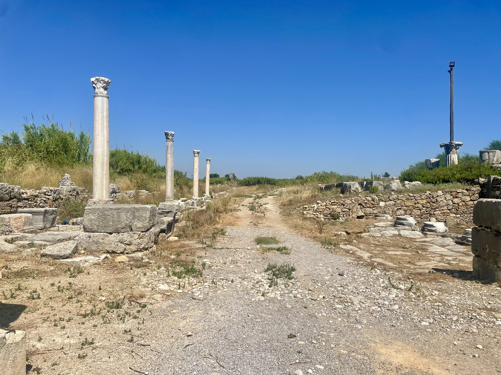
Stone pavement. Gate. Wall. Colonnade. The sun.
The stones here were not dark or mysterious. They were white, dry, and stripped of secrecy. Exposure made abstraction difficult. My eyes stung and my lips cracked. I could not stand in that light for long and think nobly about the rise and fall of civilizations.
A cat lay in the shade, like the most legitimate inhabitant of the ancient city.
There were also insects. Slender crickets, nearly the color of dried grass, sprang once and disappeared into cracks. There were ants too, different from the ants I usually see—large, but not fat, moving frantically along the edges of stones.
I was reminded of the Myrmidons. Long ago in college, when I was studying the Iliad, I learned that Myrmidons are warriors of Thessaly who followed Achilles into battle against the Trojans. My professor once told us that the Greek word could be translated as “ant-men”. These people, according to myth, had once been ants, transformed by Zeus into men, and eventually they died beneath the walls of Troy.
But in Perge, the transformation seemed to have reversed itself. Human beings had withdrawn. The stones were empty. The main street was empty. The order of city and empire had gone back into dust. But ants had returned, continuing their own routes between column bases and fissures in the stone.
History is only an hallucination we conjured up when looking at stones.
Olympos was entirely different. If Perge was a city emptied by sun on an open plain, Olympos was a city slowly being swallowed back by mountain, stream, and vegetation.
It had once been a harbor city on the Lycian coast, unfolding along a stream that led toward the Mediterranean. Its earliest origins remain uncertain, but by the Hellenistic period it had entered visible history, and its name remained on the coins of the Lycian League. In the first century BC, pirates controlled this part of the coast, using Olympos and the nearby shore as a base; then the Romans came, the age of piracy ended, and the city was drawn back into imperial order. Later, Christianity entered this harbor. The church ruins we saw belonged to that later layer of time.
To reach Olympos, one must first cross the beach at Çıralı.
The beach was wide. On one side, the sea; on the other, the mountain. We walked along the side closer to the mountain, where a few restaurants and cafés stood loosely scattered. Their wooden signs, suspended by chains, had almost lost their paint. Without those words, I would have taken them for ordinary houses. On the side closer to the sea there were more people, but they were far away enough that their voices were swallowed by the rise and fall of the water.
I remember especially the stones on the beach. They were scattered among the yellow sand, innumerable. Some grey, some white, some pale brown, some marked with dark red or purple veins. They reminded me of the night sky.
From the beach, once one enters the ancient city, the field of vision became narrower all of a sudden. A stream still runs through the middle of Olympos, dividing the ruins into two. On both sides rise steep limestone cliffs and dense forest. The openness of the sea and the beach are left behind.
The stones of Olympos are not exposed like those of Perge. A wall emerges briefly from a thicket, then disappears behind vines. Residential quarters are divided by high walls into small compartments. Many of the walls have little holes in them, and some have more regular rectangular recesses, like niches. Someone once must have placed objects there—lamps, vessels, small idols, or merely the ordinary debris of daily life.
Tree roots enter cracks in the wall. Pine needles fall on the stone pavement. Water continues to move along ancient stone channels. Bird calls, insects, wet soil—these have begun arranging the spaces once belonged to humans.
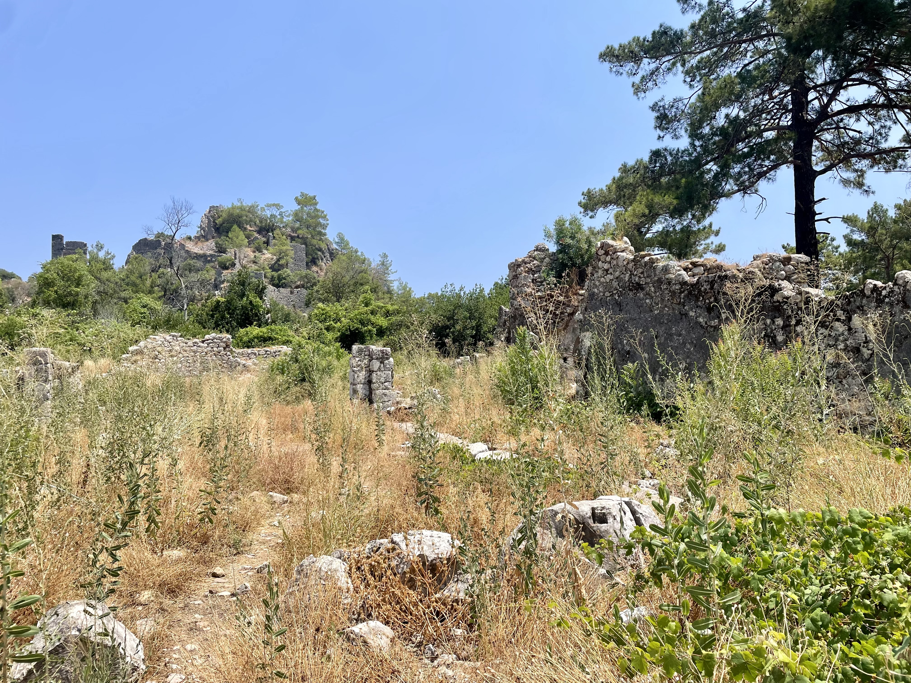
We stopped for a long time before the ruins of a church.
It was part of the city’s episcopal complex. The remaining walls still preserved the direction of a basilica, and nearby there had once been a baptistery. Around the fifth century, the church acquired its full form and was dedicated to the Virgin Mary. The baptistery, we were told, was unusually large for the Lycian region.
The same city had known pagan gods, pirates, Roman administration, Christian worship, later abandonment, winter quarters, tourists, wooden walkways. History gathered damply in layers, like moss.
Phaselis was another kind of stone.
According to tradition, colonists from Rhodes founded the city around the seventh century BC. Its three natural harbors made it an important trading center on the Lycian coast. Ships, cargo, sea salt, timber, grain, pottery, soldiers, and merchants must once have moved between these bays. Today the ancient city has merged almost completely with a tourist beach. Many people come not for the ruins, but to swim.
The central avenue under the pines remained clear. It is said to have connected the northern and southern harbors—a broad and level stone-paved road. On both sides were baths, an agora, a theatre, and broken walls. The skeleton of the city was still legible. Tall conifers formed a natural vault above the road; pine needles covered the ground, making a dry, brittle sound underfoot. The air smelled of sea salt.
And yet Phaselis did not move me. Perhaps it was because after several days touring around ancient cities my eyes had grown tired. It did not have the emptied glare of Perge, nor the damp darkness of Olympos being swallowed by vegetation. The theatre was small, incomparable to that of Aspendos. The stones remained, but they had lost the force.
Modern visitors came to Phaselis mostly to enjoy a lovely beach time. Families with children spread towels on the beach, opened umbrellas, entered the water, and ate food. The stones of the ancient harbor lay nearby. Trade, ships, taxes, imperial roads, and civic life had retreated behind the life of the modern beach. Human life continued there in another form.
Aspendos, by contrast, was much more striking.
The theatre was vast and clear, so intact that one almost suspected time had not truly passed. Built under the Roman Empire, its rows of stone seats climb upward in a perfect, ghostly symmetry. The towering stage building still rises with such astonishing height that it is easy to imagine the sound of a play, lifting from the center of the stage and drifting up through the tiers.
Ruins usually compel imagination through absence. Aspendos seemed to have preserved a past sound for too long. The sound itself might have vanished, but the enormous organ prepared to receive it remained.
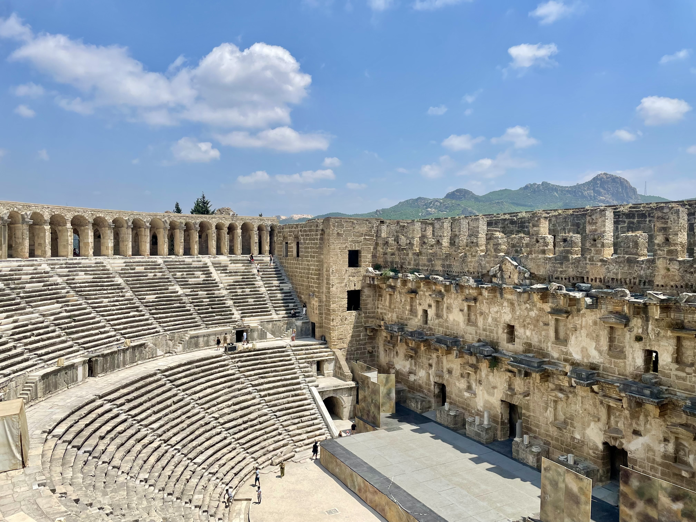
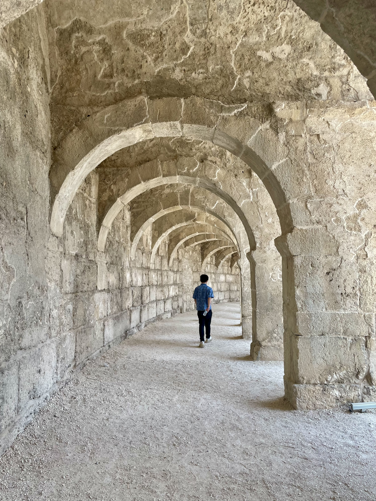
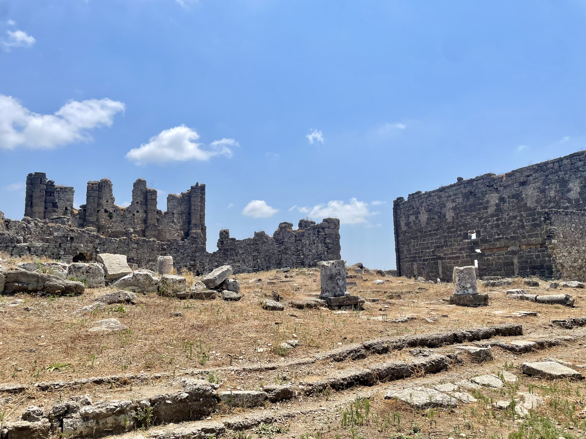
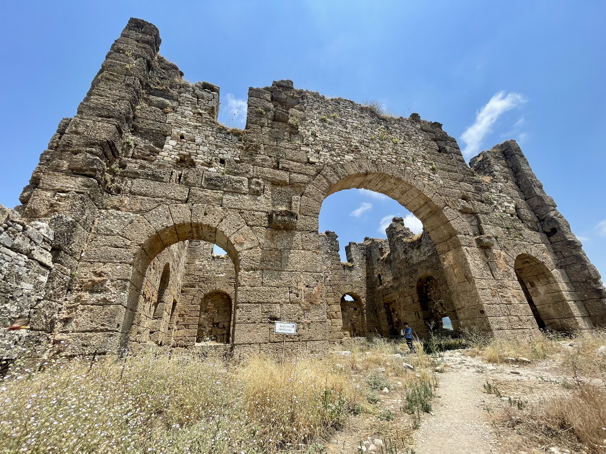
I thought of E. M. Forster’s Maurice, of Clive sitting in the theatre of Dionysus:
… The stage was empty, as it had been for many centuries, the auditorium empty; the sun had set though the Acropolis behind still radiated heat. He saw barren plains running down to the sea, Salamis, Aegina, mountains, all blended in a violet evening…
But he saw only dying light and a dead land. He uttered no prayer, believed in no deity, and knew that the past was devoid of meaning like the present, and a refuge for cowards.
Well, he had written to Maurice at last. His letter was journeying down to the sea. Where one sterility touched another, it would embark and voyage past Sunium and Cythera, would land and embark, would land again. Maurice would get it as he was starting for his work. “Against my will I have become normal. I cannot help it.” The words had been written.
He descended the theatre wearily. Who could help anything? Not only in sex, but in all things men have moved blindly, have evolved out of slime to dissolve into it when this accident of consequences is over. μὴ φῦναι τὸν ἅπανta νικᾷ λόγον3, sighed the actors in this very place two thousand years before. Even that remark, though further from vanity than most, was vain.
Outside the theatre, the ruins became more scattered.
The church ruins were exposed beneath the bare sun, and the texture of the stones had dried almost to brittleness. The building had once stood near the agora, perhaps serving as a civic hall or some other public structure; later, during the Christian period, it had been altered and reused as a religious space. Here, once again appeared the replacement of function: the same stones first served law, civic life, and exchange, then served God and worship.
The giant arches of the ruin stood alone, supporting one hollow curve after another. They no longer led to an inner chamber. They no longer led to authority, judgment, transaction, or sacred secrecy. Standing at one end of an arch, one could see straight through to the other side. There was no hidden center. Only dry grass, distant mountains, and the same excessive light that shines through.
The mountains in the distance were not majestic. They were not tall. They merely enclosed the city quietly, pale in color, their edges worn away by heat.
In this vast roofless ruin, the sound of insects lasted longer than the voices of people. Crickets kept calling in the grass. Ants moved along the cracks in the stone. Flying insects flashed briefly against the hot walls. They simply used the spaces human beings had left behind: the shade beneath a stone, the fissure in a wall, the dampness remaining near a root.
Stone stairways. Walls. Column bases. City gates. The theatre. Pebbles rounded by seawater. Ancient paths covered with pine needles. The main street whitened by the sun. Insects. Death.
Death.
Chapter 5: City of the Dead
Insects always remind me of death.
Perhaps it is because their lives, measured against our human time scale, pass too quickly and lightly. I am reminded of Scriabin’s Tenth Piano Sonata: insects celebrating death under the blazing sun. Born in the heat, they scream in stone cracks, mate, and die in masses before the next season arrives. The sonata's notes fall like the fractured imagery of countless compound eyes—flickering against the light, multiplying, and then instantly disappearing.
Death.
The Necropolis Museum of Antalya stands in the center of the modern city.
This fact itself makes it unreal. It is not a remote ruin far from traffic, not an ancient burial ground separated from daily life by valley, forest, or coast. Beside it are roads, shops, buses, taxis, glass façades, people passing through heat. The city of the living continues to operate, while the city of the dead has been covered by the modern buildings of the museum. The city of the dead has merely been separated from daily life by a layer of earth, a layer of glass, a white steel structure, and a road.
The first things I saw were jars.
Large burial jars, their mouths or sides opened, revealing skulls and bone fragments inside. Here, death retained a concrete shape: whiteness of bones, the roundness of a skull, the dark interior cavity of the vessel.
I looked at them for a long time, not because they were horrifying. No, skulls in a museum are never horrible. These skulls were too quiet; they had been entirely sanitized by the text on the plexiglass panels. Museum typography had executed its own second murder, reducing the terror of extinction to a footnote on provenance. What disturbed me was how they had stripped death of all drama, leaving only the barest, coldest residue of existence.
This removal of theatricality from death reminded me of Shostakovich speaking about his Fourteenth Symphony, that work revolving almost entirely around the theme of death. He sought to offend the great classical tradition of glorified deaths: the serene stillness of Desdemona’s death in Verdi’s Otello, the tragic, suffocating extinction softened by sumptuous coda in Aida—the famous O terra addio, a melody that still occasionally moves me to tears. Shostakovich wanted to tear these decorations away, layer by layer. He wanted death without perfume. Dry and cruel death. Death stripped of consolation.
These white bones enacted that same unsoftened cruelty. They offered no aesthetic retreat.
These cavities had once hosted speech, expression, and desire. Now, staring at them, the living are forced into a profound not-being-at-home-ness in the Heideggerian sense. We possess no final shelter. Not even death is a home. In the universal order of the universe, we remain suspended over the abyss of absolute nothingness.
And there were ostothekes—small, rock-carved boxes with lids used to hold the bones and ashes of the deceased—shaped like miniature sarcophagi, capping them with gabled temple roofs as if the dead required a small, permanent real estate. Most of them were made of limestone, a few of marble. On the narrow sides of these ossuaries, the sculptors had chiseled stylized doors representing the gates of Hades, complete with heavy handles and detailed locks. On the long walls, garlands of lotus and local flora hung from the horns of slaughtered bulls. Medusa peered out from the corners of the marble panels with warning eyes, designed to fend off grave robbers.
It seems that people could not allow death to be merely death. There must be a roof. A façade. Garlands. Masks. Bulls’ heads. Medusa’s eyes. Even if the body has turned to ash, it must still be given a little dwelling, a container that can be sealed, moved, and decorated.
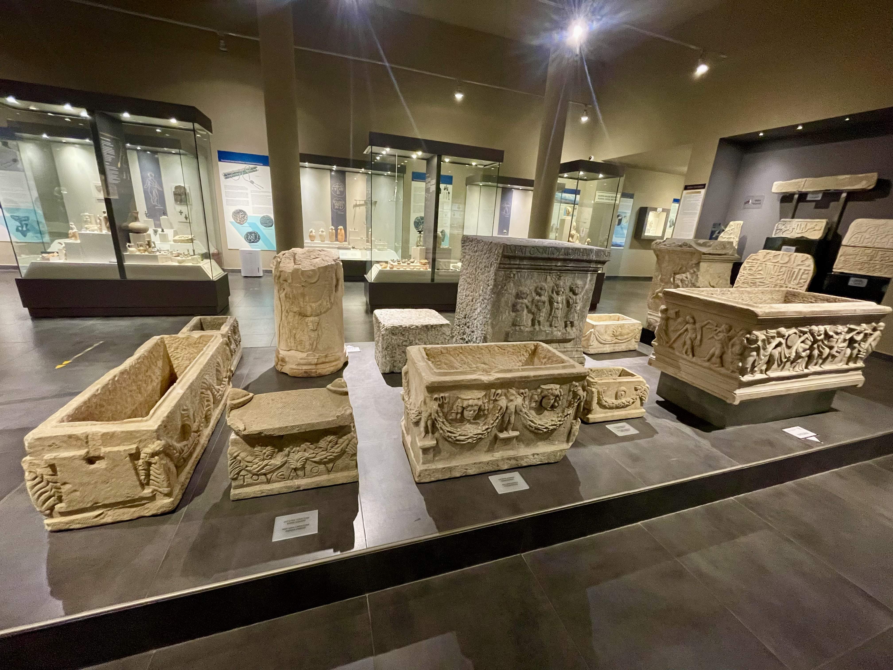
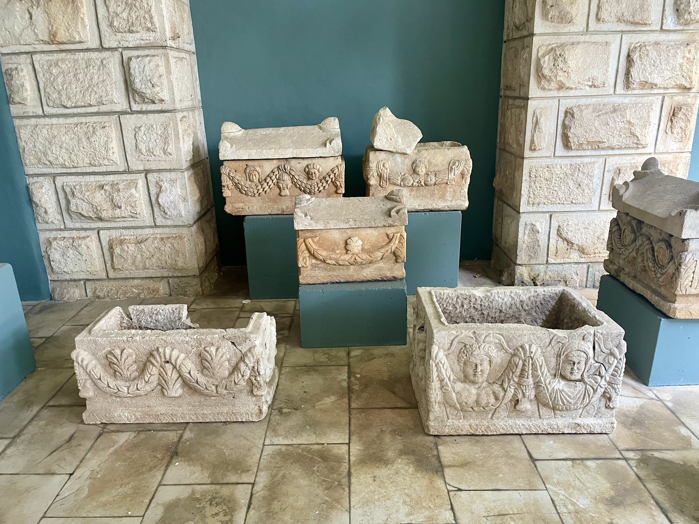
There were also tombstones and stelae.
Unlike the modern, uniform cemetery markers, these Roman-era slabs were crowded with stiff, two-dimensional narratives. One recurring figure was the ancient Anatolian deity, Kakasbos. He was often depicted as wearing a cloak and a short chiton, riding a horse with the reins in his left hand and a thick club raised high in his right. According to the label, he was a local mountain god, a protector of ordinary people who was suddenly revived during the late Roman period when the rural population needed a driver-away of evil.
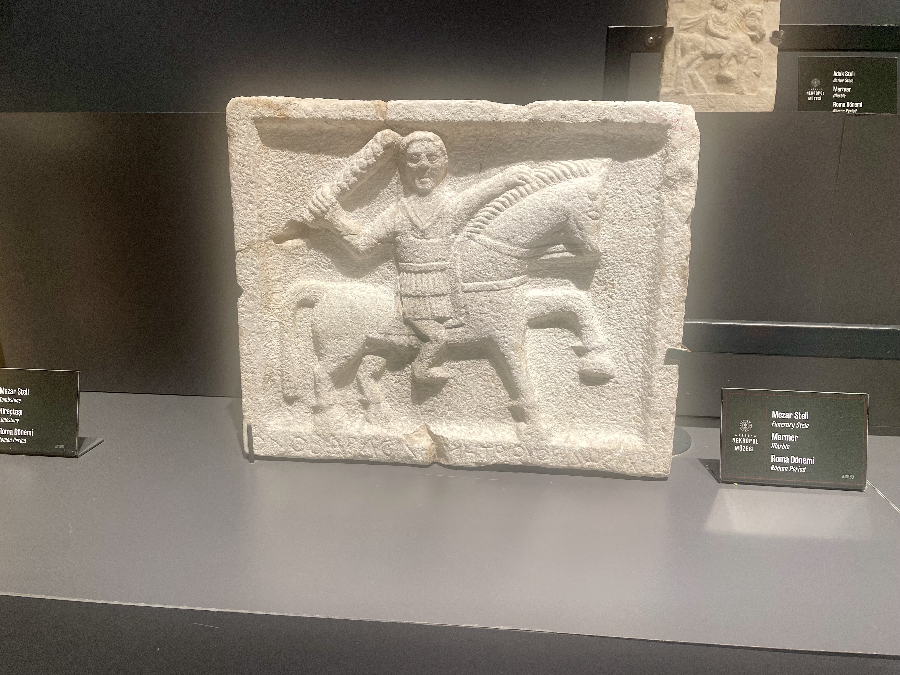
Necropolis.
Necro-polis.
Outside the exhibition hall of the Antalya Necropolis Museum was the excavation site itself. The city of the dead was no longer placed behind glass; it lay exposed beneath a modern protective structure. Rock-cut tombs appeared one after another in the uneven soil. Beside many of the pits stood small white labels and numbered signs. The signs were small and clean with the peculiar composure of modern systems of management, marking opened graves, cleared bones, stones moved or half-moved out of their original positions. Each number was like a small nail, pinning death onto the flat surface of knowledge.
Archaeology brings the dead back to the sun, but this return is incomplete. They are stripped of panic and weight. They no longer have voices, fears, or desires. They have been converted into an inventory of jars, bones, and catalog of numbers. Each label is a zinc nail pinning the corpse to the flat surface of historical knowledge.
Above the site was a vast net of white steel pipes, welded into a dense structure. It blocked the burning Antalya sun and protected the fragile soil, tombs, and remains below. The structure was light and cold, carrying an industrial whiteness. The city of the dead lay beneath it like evidence temporarily preserved at the scene.
A glass walkway hung over the burial site.
On the slopes of Chimaera, I had been an insignificant speck climbing from below to above, trying to approach the fire that leaked from the mountain’s fissures. At the cliffside of the hotel, I had been trapped in a metal cage, dropping vertically from above to below, transported towards that infinite indifference called the blue sea.
And now, in the center of the modern city, I was suspended in midair between two planes—the city of the living humming outside the glass walls, and the city of the dead lying exposed beneath my feet.
I had thought of time as flowing forward, horizontally, with the past lying behind and the future ahead. But this walkway revealed vertical time. To travel through history is to stand on a trapdoor that might open at any moment; and when it does, the two eras briefly look at one another across the insurmountable gulf that is oblivion.
Ascent.
Descent.
Suspension.
Through the white steel structure and the distant glass walls, one could see modern Antalya, with its yellow taxis and cafés here and there. The living always continue like this: waiting for a car, buying water, making a phone call, smoking, crossing the street. The air was full of heat, dust, and gasoline.
Chapter 6: Glass
W and I joked that Turkish architecture seemed a little confused, as if it could not decide to which style it wanted to belong.
This was not, of course, a serious judgment in architectural theory. More precisely, Antalya was not a city without style, but a city in which style had failed to settle into a single label. It kept borrowing and pasting together things that perhaps should not have appeared on the same street corner: an Ottoman wooden bay window might stand next to a glass curtain wall, a pseudo-antique stone arch might open into the lobby of a modern hotel. White resort buildings stretched along the cliffs, and only a few streets away there were old concrete houses, earth-yellow walls, shop signs in bright colors, and balconies burdened with air-conditioners and satellite dishes.
All of this was placed under the same bright light. The light bleached the edges of things, as if the camera of the world had been overexposed and, for a moment, all contradictions had been dissolved in the same glare.
Hotels, restaurants, apartments, terraces, glass railings.
Near the park, several white buildings reminded me of public or commercial architecture in China around the turn of the century. They carried that strange millennium atmosphere: a little postmodernism, a little Bauhaus, a little cheap futurity. The structures were entirely white, defined by smooth, broken lines and sharp geometric outlines. Most peculiar was the row of enormous white folded canopies on the roof, opening toward the night sky like sails, or like metallic white lotuses.
It was exaggerated and outdated. But precisely because it was outdated, I did not dislike it. It carried the clumsiness of an era that had once seriously believed in the future—as if people truly thought that by making a building white, streamlined, glassy, and angular, they might enter a brighter, more advanced, and less dusty age.
Antalya’s Old Town has several high viewpoints overlooking the Marina. In order not to block the view, the railings are made of glass. One pane had already cracked, its cracks spreading densely like a spiderweb. The sunset, coming from behind, made each fracture glimmer with a cold, sharp light.
Through this cracked glass, I looked out.
To the right was the sea. The evening threw a pink-purple light onto the water; as the wind passed over, the surface trembled into fine ripples. Those wavelets and the cracks in the glass strangely resembled each other. Both shattered a whole world into innumerable small fragments.
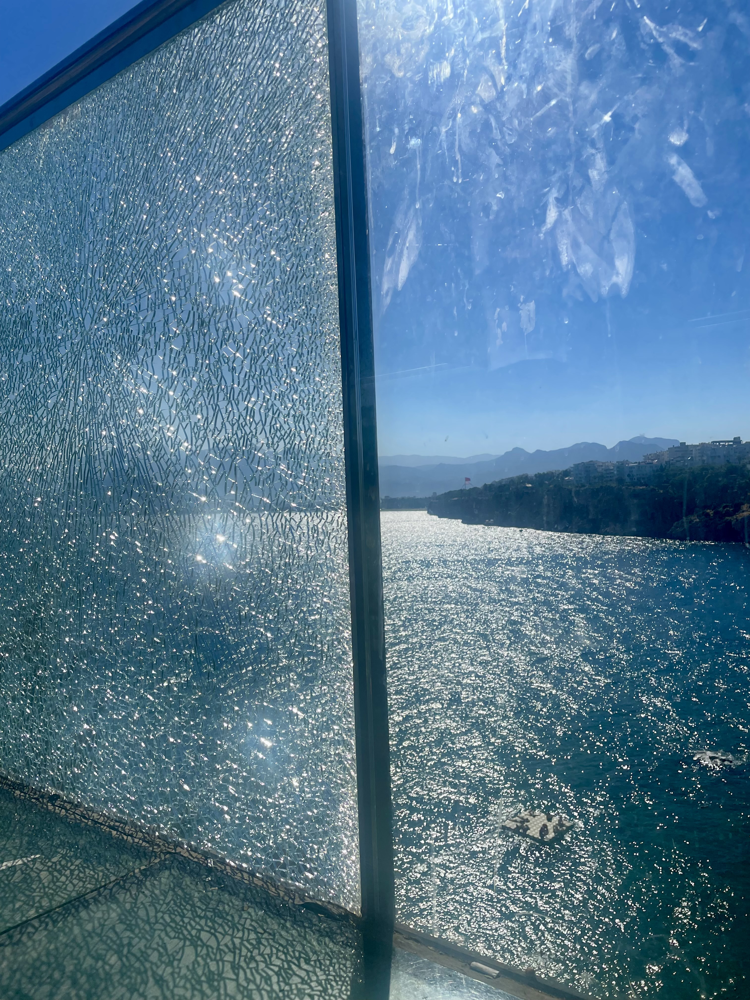
I realized at that moment that I had never seen Antalya directly.
I had always seen it through a lens: the airplane windshield, the hotel window overlooking the pool, the cracked railing, or through literature, history, anxiety, and desire. The city itself has never arrived as a whole. It is always refracted through some medium, carrying with it cracks, discoloration, and overexposure.
It made me, strangely, feel relieved.
Chapter 7: Burning
The bodies of Turkish people are hard to unsee. Not because they are especially beautiful or ugly, but because they do not seem to evade their own heaviness. The staff outside the airport, the men in restaurants, the people waiting by the road, the women dressed in black walking swiftly through the night—they all carried a certain unpolished physicality. The men’s beards were especially visible: thick, dark, reminding me of maturity, animality, and fatigue.
Those bodies I could not forget.
The broad-shouldered women working outside the airport terminal stood between the glass doors and the sun, thick fingers clamping cigarettes. They would exhale a mouthful of smoke before answering my question, with a tone of almost professional indifference.
Many Turkish women smoke.
At night, women wrapped in black moved hurriedly beneath the dim streetlights. Their clothes were tight, outlining the supple fullness of thighs and hips as they walked. Their hair clung to their necks, their faces swallowed by shadow. Only the white vapor from their mouths remained visible. Cigarettes did not make them seem frivolous; on the contrary, the smoke added a certain weight—a refusal to explain themselves.
This reminded me of the way Tezer Özlü writes women.
In her sentences, there is a cold, anatomical presence of the body. Woman is never a figure to be rescued or praised, but a site of exhaustion, desire, illness, and death. She writes about trains, hotels, streets, mothers, transient men, and psychiatric wards, and defends the female experience with a self-destructive, nauseating precision. Though her characters belong to Istanbul, those women in black on the streets of Antalya made me think of her.
We had Kelle Paça—that is, sheep-head soup—at a local restaurant.
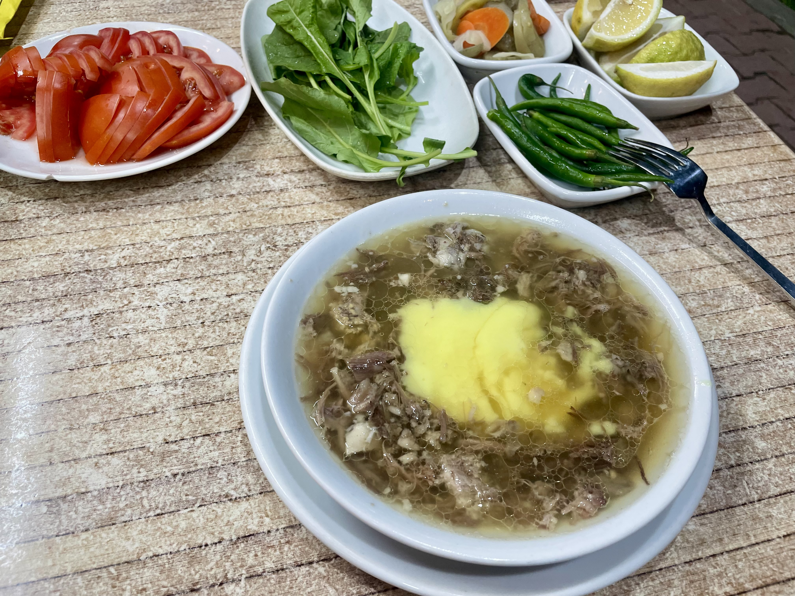
The place was small and not very clean. There were many flies—one of the characteristics of small restaurants in Antalya. They circled around the table and the bowls in tight, neurotic orbits. I was always amazed by the locals’ ability to ignore these annoying bugs.
When the soup arrived, the steam carried a dense, heavy animal grease that filled the throat before the spoon even touched the broth. The broth was pale and opaque, with small patches of yellow fat floating on the surface. After drinking it, my stomach felt warm, like a fire lit within.
The owner spoke very little English, and I struggled to ask him: what cigarettes do people smoke here?
He thought for a moment and said, Tekel 2000. Kırmızı Uzun. And the blue one, Mavi.
I did not entirely understand. So he simply led me across the street to buy a pack. We crossed the road and entered a small shop selling cigarettes and miscellaneous goods. He exchanged a few Turkish sentences with the man behind the counter, who then took out a pack of long cigarettes. The whole process was finished in a matter of seconds.
Kırmızı Uzun was quite strong.
That night, I sat beside the hotel’s outdoor swimming pool and lit one.
From the bottom of the pool rose a deep blue artificial light. The air was not cool. It was not hot either. It had a sticky sensation, as if the heat of the day had not fully dispersed, but remained pressed against the skin. The world seemed to have stopped breathing.
The hotel garden darkened into silhouettes. Large leaves, pine branches, and tangled crowns of trees gathered into black masses against the sky. Warm yellow lanterns hung low among them, producing a golden haze that touched the leaves without softening the air.
Below the cliff, the sea had become a washed black. The Old City Marina of Antalya flickered in the distance with small lights. Nearer the cliff, waves struck the rock with a continuous sound, neither violent nor gentle.
The cigarette burned between my fingers.
At that moment I thought of the eternal fire I had seen on the slope of Chimaera earlier that day, flames rising from cracks in the rock.
Science tells us how the fire burns. But it does not explain why human beings must search for meaning in it. It details the composition of the gas, but it cannot explain why a modern traveler, after climbing through sweat and dust, still feels a secret, prehistoric tremor when he sees low flames trembling on bare stone.
Perhaps this is the ugliness of modern disenchantment. It convinces us that all mysteries have been fully solved, or that those remaining will be explained one day. And so in laboratories, airports, and museums, we have built pristine, windowless shrines to a new deity called Reason—an idol far more authoritarian and omnipresent than the old gods.
The crude taste of tar filled my mouth at once, dry and bitter. I inhaled it. The smoke entered the lungs and brought a faint, choking pressure that made me want to cough.
But I do not wish to oppose reason. To oppose reason is foolish. Without it, illness would still be interpreted through sorcery, and the world would continue to be governed by irrefutable authority. Yet when this new god ascends the throne, it demands a total eviction of the metaphysical weight of things. It teaches us that whatever can be scientifically classified no longer requires myth, poetry, fear, or silence.
Is this the price of expulsion from the garden? Like the fallen in Paradise Lost, we are led by knowledge out of the shelter of myth, only to find that the blinding light of reason offers no dwelling place.
White smoke rose steadily from the burning tobacco. It was entirely unlike the fire of Chimaera. It had no posture of eternity. It rose from a small roll of paper, entered the lung, remained for a moment, and was exhaled. It belonged to the night. It made all grand things seem slightly ridiculous.
I watched the cigarette shorten in my hand. When the smoke left the burning end, it first held itself as a thin line, attempting to maintain its shape; then it opened, thinned, dispersed into the sticky night air, and was swallowed by the sea wind.
Perhaps we, too, are only something that briefly heats, briefly takes shape, and then disperses.
Sheep-head soup. Flies. Beards. Women in black. Tekel 2000. The swimming pool at night. The washed-black sea.
I pressed out the cigarette. A little aftertaste remained in the air, bitter, dry, refusing to disappear.
On the slope of Chimaera, the distant sea had been still and almost empty. Up on the mountain, my body had been pinned to the immediate dirt, my palm stained with the dust of the trail, but my eyes were constantly pulled outward by that blue horizon. Wind passed through the pines, making a sound like waves. Cicadas continued without pause, their rhythms irregular, like some tireless voice transmitted from prehistory.
Myth. Science. Travel. History. Interpretation. Eternity.
Each word had begun to fade, its edges whitening as if left exposed under the sun for too long.
Perhaps I had not come to Lycia in order to see the Mediterranean, nor the ancient cities, tombs, and theaters. Perhaps I had come here only to realize that I simply cannot stop interpreting. Every scene tempted me to name it, classify it, place it into history, myth, philosophy, or private memory. And yet every attempt failed, because things always overflow their definitions.
The sea is more than “sea.” Fire is more than “fire.” Death is more than “death.” Blue is more than “blue.”
The fire burned on the stone.
And I see it.
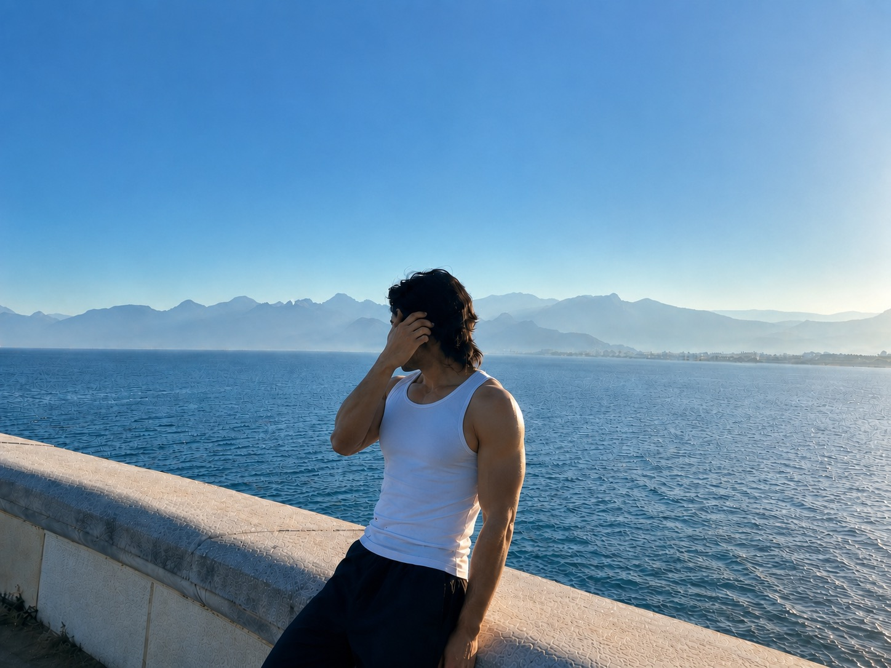